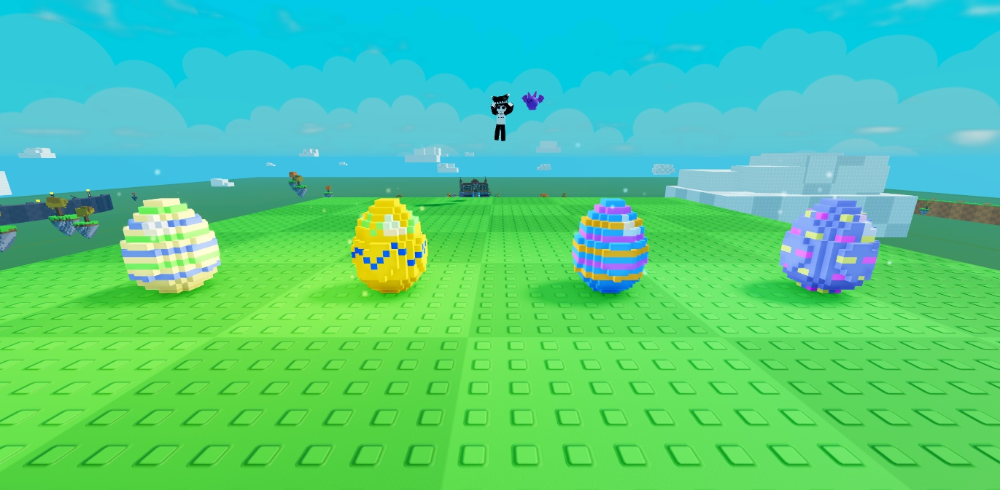
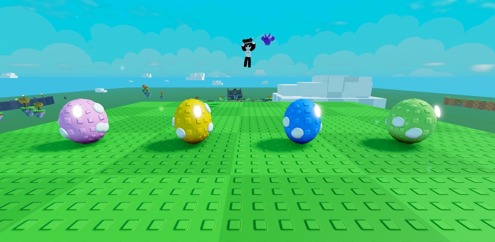
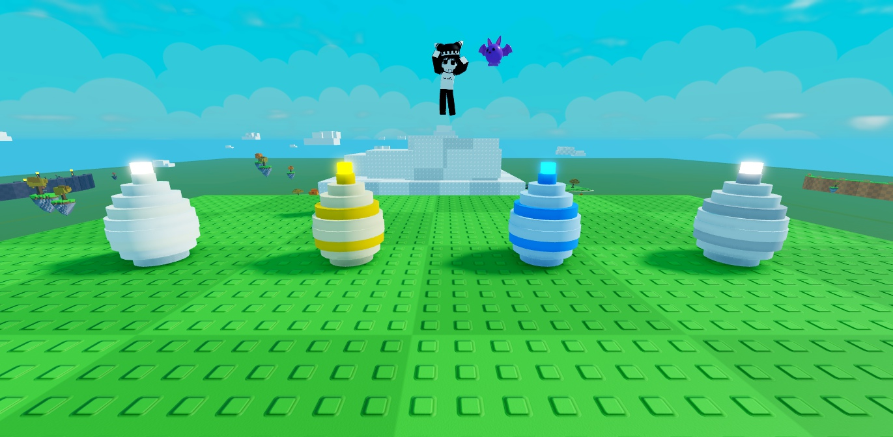
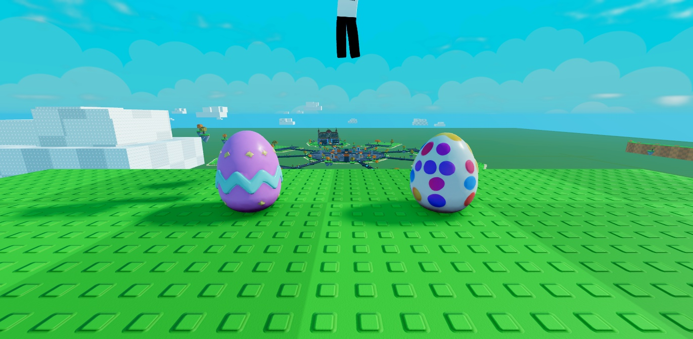

🥚 Les œufs : nouvelle éclosion et nouvelle apparence
C'est une proposition à valider : rien n'est changé dans le jeu.
1. L'éclosion commence dès qu'on a l'œuf
Aujourd'hui
Un œuf acheté va dans un incubateur de la place. 1 seul est gratuit ; les 3 autres coûtent 1 500, 7 500 et 50 000 💠.
Les autres œufs attendent qu'un incubateur se libère.
À la fin, il faut cliquer « Ouvrir ! », puis une grande animation plein écran (œuf qui tremble, explosion, carte).
Proposition
Chaque œuf (machine, comptoir, boss, coffres, récompenses…) commence à éclore tout de suite. Pas de limite, plus d'incubateurs à acheter.
À la fin du temps, la créature naît toute seule, sans animation : un petit message et elle apparaît dans tes créatures.
Si tes créatures sont pleines, l'œuf attend (« Prêt ») jusqu'à ce que tu fasses de la place.
🥚 Mes œufs (3 en éclosion)
Œuf de Dragon · Légendaire
⏱️ 7:35 restantes
⚡ Éclore R$35
Œuf de Loup · Rare
⏱️ 0:27 restantes
⚡ Éclore R$5
Œuf de Lapin · Commun
⏱️ 0:24 restantes
⚡ Éclore R$5
🐣 Ton Loup (Rare) est né ! Il t'attend dans tes créatures.
Ce qui change aussi
Le bouton « 🐣 Incubateurs » disparaît ; tout se voit dans « 🥚 Œufs » (temps qui reste, barre de progression).
Les 4 incubateurs de la place sont retirés.
Le bouton Robux « ⚡ Éclore maintenant » reste (il fait naître l'œuf tout de suite).
Remboursement : un joueur qui avait payé des incubateurs récupère ses éclats de mana.
Les œufs déjà en stock dans les sauvegardes commencent à éclore à la prochaine connexion.
Tutoriel : l'étape « ouvre ton œuf » devient « ton œuf éclot… patiente ! ».
2. L'apparence des œufs (vus en jeu, en plein jour)

A. Aujourd'hui : œuf en voxelsPixels et motifs en blocs. Lisible, mais chargé.

B. Œuf lisse à tachesFait avec des pièces simples : un peu trop rond, ressemble à une balle.

C. Œuf en briquesCouches empilées : dans le style briques, mais un peu « toupie ».

D. Œufs dessinés (modèle 3D généré) mon choixVraie forme d'œuf, brillant, motifs nets (zigzag, pois, étoiles) : le look des simulateurs. Je ferais un modèle par rareté (Commun, Peu commun, Rare, Épique, Légendaire, Mythique, Divin, Céleste) avec ses couleurs et un motif plus riche à chaque rareté, plus un halo lumineux pour les très rares.
Où on verrait les nouveaux œufs : sur les socles de la machine à œufs, au comptoir, dans le menu « Œufs » et dans la boutique. Ils seraient tous du même style partout (aujourd'hui la machine a un œuf différent du reste).